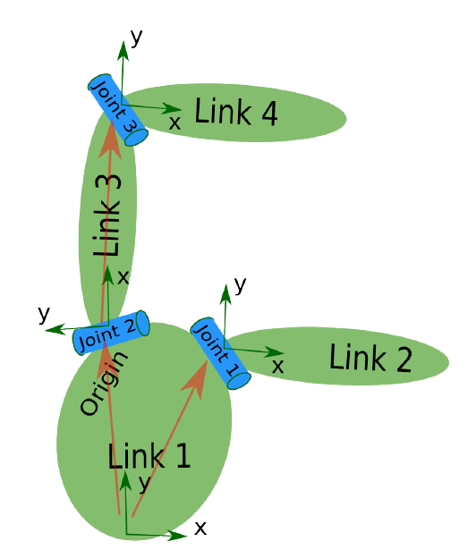

layout: true <div class="header"><img src="../../common/logo/ros_industrial_logo.png" alt="ROS-Industrial" style="background-color:transparent"/></div> <div class="footer"><img src="https://www.ipa.fraunhofer.de/content/dam/ipa/ipa.svg" /><p>© Fraunhofer IPA</p></div> <div class="triangle"></div> --- class: center, middle name: main_title # URDF AND XACRO ### Describing a robot and its cell After this session you can read and write a URDF, use xacro to keep it short and reusable, and check a description with the command-line tools. --- class: dense ## What is URDF? .cols[ .fifty[ **U**nified **R**obot **D**escription **F**ormat: an XML file that describes the **kinematic and physical structure** of a robot: a tree of **links** connected by **joints**. Read by: - `robot_state_publisher`: link transforms on TF - RViz: what to draw - MoveIt, Tesseract: kinematics, collision checking - Gazebo: physics - `ros2_control`: hardware interfaces (`<ros2_control>` tag) Not in the URDF: - planning groups, end effectors, disabled collisions: the **SRDF** - objects that move around: the planning environment ] .fifty[ | Element | Purpose | |---|---| | `<link>` | A rigid body, and its frame | | `<joint>` | Connects a parent link to a child link | | `<origin>` | Pose: `xyz` [m], `rpy` [rad] | | `<visual>` | What RViz draws | | `<collision>` | What collision checking uses | | `<inertial>` | Mass and inertia (simulation) | | `<axis>`, `<limit>` | Direction and range of a joint | ] ] --- class: dense, small-code ## Links and joints .cols[ .forty[ <p></p> .note[Image: [ROS wiki URDF tutorial](http://wiki.ros.org/urdf/Tutorials/Create%20your%20own%20urdf%20file) (CC BY 3.0)] ] .sixty[ ```xml <robot name="three_dof"> <link name="link1"/> <link name="link2"/> <joint name="joint1" type="revolute"> <parent link="link1"/> <child link="link2"/> <!-- frame of link2 in link1, when the joint is at 0 --> <origin xyz="0.5 0.3 0" rpy="0 0 0"/> <axis xyz="0 0 1"/> <limit lower="-1.57" upper="1.57" effort="10" velocity="1.0"/> </joint> </robot> ``` - Each link has its own frame. The joint **origin** places the child's frame in the parent's frame - Each link has **one parent** joint, and there is one root link: the description is a tree, exactly like the TF tree it produces - The joint position (from `/joint_states`) moves the child around or along the **axis** ] ] --- class: dense, small-code ## Inside a link .cols[ .sixty[ ```xml <link name="gripper_base"> <visual> <origin xyz="0 0 0.03" rpy="0 0 0"/> <geometry> <mesh filename="package://my_gripper_description/meshes/visual/base.dae"/> </geometry> </visual> <collision> <origin xyz="0 0 0.03" rpy="0 0 0"/> <geometry> <box size="0.08 0.06 0.06"/> <!-- simple shape: fast checks --> </geometry> </collision> <inertial> <mass value="0.4"/> <inertia ixx="0.0002" ixy="0" ixz="0" iyy="0.0002" iyz="0" izz="0.0002"/> </inertial> </link> ``` ] .forty[ - **Geometry:** `box`, `cylinder`, `sphere`, or a `mesh` (STL, DAE, OBJ) - **Visual** can be detailed. **Collision** should be simple: primitives or a coarse mesh - `package://` paths are found through the installed package: the package must install its `meshes/` - **Inertial** is needed by simulators, ignored by RViz and `robot_state_publisher` - A link without any of these is just a **frame**, e.g. `tool0`, or a frame from the Frame Editor ] ] --- class: dense ## Joint types | Type | Motion | Needs | |---|---|---| | `fixed` | None: flange → gripper, table → robot base | `origin` | | `revolute` | Rotation within limits | `axis`, `limit` (lower, upper, effort, velocity) | | `continuous` | Rotation without limits, e.g. a wheel | `axis` | | `prismatic` | Translation within limits, e.g. a gripper finger | `axis`, `limit` | | `floating` | All 6 degrees of freedom | Rarely used | | `planar` | Motion in the plane perpendicular to the axis | Rarely used | <br/> - `<mimic joint="finger_left" multiplier="1.0"/>`: a joint that follows another one, e.g. the second finger of a gripper - `/joint_states` gives the positions of the moving joints. `robot_state_publisher` publishes **fixed joints on `/tf_static`, the others on `/tf`** (TF2 deck: "From URDF to TF2") --- class: dense, small-code ## Xacro: URDF with variables and logic .cols[ .sixty[ ```xml <robot name="cell" xmlns:xacro="http://www.ros.org/wiki/xacro"> <xacro:arg name="use_camera" default="true"/> <!-- set from outside --> <xacro:property name="table_height" value="0.84"/> <!-- constant --> <xacro:include filename="$(find my_camera_description)/urdf/camera_macro.xacro"/> <link name="world"/> <link name="robot_mount"/> <joint name="world_to_robot_mount" type="fixed"> <parent link="world"/> <child link="robot_mount"/> <origin xyz="0 0 ${table_height}" rpy="0 0 ${pi/2}"/> <!-- maths --> </joint> <xacro:if value="$(arg use_camera)"> <!-- condition --> <xacro:camera prefix="" parent="world"> <origin xyz="0.5 0 1.5" rpy="0 ${pi/2} 0"/> </xacro:camera> </xacro:if> </robot> ``` ] .forty[ | Plain URDF | Xacro | |---|---| | No variables | `property`, `arg` | | Numbers computed by hand | `${...}` expressions, `pi` | | Copy and paste | `macro`, `include` | | Long, hard to maintain | Short, modular | <br/> - Xacro is **expanded to plain URDF** before anyone uses it: `xacro cell.urdf.xacro use_camera:=false > cell.urdf` - `$(find pkg)` locates an installed package - Naming: `<name>.urdf.xacro` for a complete robot, `<name>_macro.xacro` for macros ] ] --- class: dense, small-code ## Xacro macros: reusable parts .cols[ .sixty[ ```xml <xacro:macro name="gripper" params="prefix parent *origin"> <joint name="${prefix}gripper_mount" type="fixed"> <xacro:insert_block name="origin"/> <parent link="${parent}"/> <child link="${prefix}gripper_base"/> </joint> <link name="${prefix}gripper_base"/> <!-- fingers, joints, ... all named ${prefix}... --> </xacro:macro> <!-- one gripper on each arm --> <xacro:gripper prefix="left_" parent="left_tool0"> <origin xyz="0 0 0" rpy="0 0 0"/> </xacro:gripper> <xacro:gripper prefix="right_" parent="right_tool0"> <origin xyz="0 0 0" rpy="0 0 0"/> </xacro:gripper> ``` ] .forty[ - `prefix`: unique names, so a part can be used twice - `parent` + `origin` block: mount the part anywhere - Vendors ship their robots as macros like this (`ur_robot`, the FR3 arm, the GP50) - The Frame Editor's **Export xacro** writes your frames as such a macro - A **cell description** includes and connects these macros: see Manipulation → "Structuring a manipulation workspace" ] ] --- class: dense, small-code ## From file to running robot .cols[ .fifty[ In a launch file: ```python robot_description = ParameterValue(Command([ "xacro ", PathJoinSubstitution([ FindPackageShare("simple_ur_cell_description"), "urdf", "simple_ur_cell.urdf.xacro"]), ]), value_type=str) Node(package="robot_state_publisher", executable="robot_state_publisher", parameters=[{"robot_description": robot_description}]) ``` `robot_state_publisher` also republishes the URDF on the `/robot_description` topic, for RViz and other nodes. ] .fifty[ Tools: - `xacro cell.urdf.xacro > cell.urdf`: expand - `check_urdf cell.urdf`: parse and print the tree - `urdf_to_graphviz cell.urdf`: the tree as a PDF - `ros2 run joint_state_publisher_gui joint_state_publisher_gui`: move the joints by hand Pitfalls: - Units: m, rad, kg - Axes (REP 103): x forward, y left, z up - Mesh not shown: wrong `package://` path, or the package does not install it - Two parents, or two roots: not a tree, the parser fails ] ] .note[Exercise: [modify a cell description](https://github.com/ROS-Industrial-Session-B/root_project_session_B/blob/main/exercices/01_tf_urdf/cell_description.md) (draft, session B) · [build a Cartesian robot with URDF and xacro](../../../_source/manipulation/urdf/02_urdf_xacro_exercice_cartesian_robot.html) (workshop: ROS 2 Manipulation → Robot Description)]